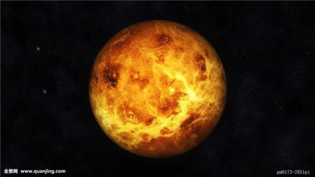
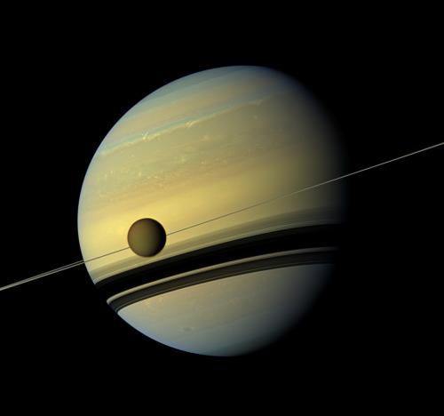

太阳系是以太阳为中心，和所有受到太阳的引力约束天体的集合体。包括八大行星（由离太阳从近到远的顺序：水星、金星、地球、火星、木星、土星、天王星、海王星 ）、以及至少173颗已知的卫星、5颗已经辨认出来的矮行星和数以亿计的太阳系小天体。
水星
水星（英语：Mercury，拉丁语：Mercurius）是太阳系八大行星最内侧也是最小的一颗行星，也是离太阳最近的行星。中国称为辰星，有着八大行星中最大的轨道偏心率。它每87.968个地球日绕行太阳一周，而每公转2.01周同时也自转3圈。 水星有着太阳系行星中最小的轨道倾角。水星轨道的近日点每世纪比牛顿力学的预测多出43弧秒（角秒）的进动，这种现象直到20世纪才从爱因斯坦的广义相对论得到解释。 水星是一颗类地行星，由于其非常靠近太阳，所以只会出现在凌晨成为晨星，或是黄昏出现作为昏星。除非有日食，否则在阳光的照耀下通常是看不见水星的
金星
金星（Venus）是太阳系中八大行星之一，按离太阳由近及远的次序，是第二颗，距离太阳0.725天文单位。它是离地球最近的行星（火星有时候会更近）。古罗马人称作维纳斯，中国古代称之为长庚、启明、太白或太白金星，古希腊神话中称为阿佛洛狄特。公转周期是224.71地球日。 夜空中亮度仅次于月球，排第二，金星要在日出稍前或者日落稍后才能达到亮度最大。它清晨出现在东方天空，被称为“启明”；傍晚处于天空的西侧，被称为“长庚”。
地球
地球（Earth）是太阳系八大行星之一，按离太阳由近及远的次序排为第三颗，也是太阳系中直径、质量和密度最大的类地行星，距离太阳1.5亿公里。地球自西向东自转，同时围绕太阳公转。现有40~46亿岁，[1] 它有一个天然卫星——月球，二者组成一个天体系统——地月系统。46亿年以前起源于原始太阳星云。 地球赤道半径6378.137千米，极半径6356.752千米，平均半径约6371千米，赤道周长大约为40076千米，呈两极稍扁赤道略鼓的不规则的椭圆球体。地球表面积5.1亿平方公里，其中71%为海洋，29%为陆地，在太空上看地球呈蓝色。 地球内部有核、幔、壳结构，地球外部有水圈、大气圈以及磁场。地球是目前宇宙中已知存在生命的唯一的天体，是包括人类在内上百万种生物的家园。[1]
火星
火星（Mars）是太阳系八大行星之一，是太阳系由内往外数的第四颗行星，属于类地行星，直径约为地球的53%，质量为地球的11%。自转轴倾角、自转周期均与地球相近，公转一周约为地球公转时间的两倍。橘红色外表是地表的赤铁矿（氧化铁）。我国古书上将火星称为“荧惑星”，西方古代（古罗马）称为“战神玛尔斯星”。 火星基本上是沙漠行星，地表沙丘、砾石遍布且没有稳定的液态水体（2015年9月28日，美国宇航局公布火星上有少量的水）。二氧化碳为主的大气既稀薄又寒冷，沙尘悬浮其中，每年常有尘暴发生。火星两极皆有水冰与干冰组成的极冠会随着季节消长。 与地球相比，火星地质活动较不活跃，地表地貌大部份于远古较活跃的时期形成，有密布的陨石坑、火山与峡谷，包括太阳系最高的山：奥林帕斯山和最大的峡谷：水手号峡谷。另一个独特的地形特征是南北半球的明显差别：南方是古老、充满陨石坑的高地，北方则是较年轻的平原。 火星有两个天然卫星：火卫一和火卫二，形状不规则，可能是捕获的小行星。在地球，火星肉眼可见，最高亮度可达-2.9等，八大行星中比木星、金星暗。2015年9月28日，美国航天局宣布火星存在流动水。[1] 2016年8月24日出现罕见的三星一线天文现象。美丽的土星、距离地球最近的外行星火星和天蝎座最亮恒星“心宿二”，三者依次连成一条直线，[2]
木星
木星（Jupiter）是太阳系八大行星中体积最大、自转最快的行星，从内向外的第五颗行星。它的质量为太阳的千分之一，是太阳系中其它七大行星质量总和的2.5倍。木星与土星、天王星、海王星皆属气体行星，因此四者又合称类木行星（木星和土星合称巨行星）。 2017年，天文学家又发现了2颗新的木星卫星，使得这颗气态巨行星的已知卫星数量增加到69个。据悉，这两颗卫星分别发现于2016年3月和2017年3月在柯伊伯带被发现，并由此得名S/2016 J1和S/2017 J1。 木星是一个气态巨行星。木星主要由氢组成，其次为氦，占总质量的25%，占所有太阳系行星的70%岩核则含有其他较重的元素。气态行星没有实体表面，它们的气态物质密度随深度的变大而不断加大。我们所看到的通常是大气中云层的顶端，压强比1个大气压略高。 由于自转快速而呈现扁球体（赤道附近有略微但明显可见的凸起）。外大气层明确依纬度分为多个带域，各带域相接的边际容易出现乱流和风暴。最显著的例子是大红斑，最早在17世纪时人们便以望远镜首度发现它的存在。环绕着行星的是松弱的行星环系统和强大的磁层。木星至少有69个卫星。 迄今已有数艘无人太空船前往木星探勘，最值得注意的是早期飞掠任务的先锋号和航海家计划，和后期的伽利略号。最最新访问这个行星的探测器是朱诺号，于2016年7月4日进入环绕木星的轨道。未来仍将继续探测木星系统，包括可能被冰覆盖着可能有液态海洋的欧罗巴。
\土星
土星（英文Saturn，拉丁文Saturnus），为太阳系八大行星之一，至太阳距离（由近到远）位于第六，体积则仅次于木星。并与木星、天王星及海王星同属类木行星。欧洲古代（古希腊）称土星为克洛诺斯星，古代中国亦称之镇星或填星。 土星主要由氢组成，还有少量的氦与微量元素，内部的核心包括岩石和冰，外围由数层金属氢和气体包裹着。最外层的大气层在外观上通常情况下都是平淡的，虽然有时会有长时间存在的特征出现。土星的风速高达1800公里/时，明显的比木星上的风速快。土星的行星磁场强度介于地球和更强的木星之间。 土星有一个显著的行星环（可以通过望远镜直接观测），主要的成分是冰的微粒和较少数的岩石残骸以及尘土。已经确认的土星的卫星总共有62颗。其中，土卫六是土星系统中最大和太阳系中第二大的卫星（半径2575km）（太阳系最大的卫星是木星的木卫三，半径2632km）。 2016年8月24日出现罕见的三星一线天文现象。美丽的土星、距离地球最近的外行星火星和天蝎座最亮恒星“心宿二”，三者依次连成一条直线。[1]
天王星
天王星（Uranus）是太阳系由内向外的第七颗行星（18.37~20.08天文单位），其体积在太阳系中排名第三（比海王星大），质量排名第四（小于海王星），几乎横躺着围绕太阳公转。[1] 天王星大气的主要成分是氢和氦，还包含较高比例的由水、氨、甲烷等结成的“冰”，但是氨和甲烷在天王星上只能以液体来存在。与可以探测到的碳氢化合物。天王星是太阳系内大气层最冷的行星，最低温度只有49K（-224℃）。其外部的大气层具有复杂的云层结构，水在最低的云层内，而甲烷组成最高处的云层。 相比较而言，天王星的内部则是由冰和岩石所构成。 天王星的英文名称Uranus来自古希腊神话中的天空之神乌拉诺斯（Οὐρανός），是克洛诺斯的父亲，宙斯的祖父。与在古代就为人们所知的五颗行星（水星、金星、火星、木星、土星）相比，天王星的亮度也是肉眼可见的，但由于亮度较暗、绕行速度缓慢并且由于当时望远镜观测能力不足，未被古代的观测者认定为是一颗行星。直到1781年3月13日，威廉·赫歇耳爵士宣布他发现了天王星，首度扩展了太阳系已知的界限，这也是第一颗使用望远镜发现的行星。 天王星和海王星的内部和大气构成和更巨大的气态巨行星木星土星不同。同样的，天文学家设立了冰巨星分类来安置它们。
海王星
海王星（Neptune）是八大行星中的远日行星，按照行星与太阳的距离排列海王星是第八颗行星，直径上第四大行星，质量上第三大行星。它的亮度仅为7.85等，只有在天文望远镜里才能看到它。由于它那荧荧的淡蓝色光，所以西方人用罗马神话中的海神——“尼普顿”的名字来称呼它。在中文里，把它译为海王星。 海王星在直径和体积上小于天王星，但质量却大于天王星，大约是地球的17倍，而它的姊妹行星天王星因密度较低，质量大约是地球的14倍。 海王星的大气层以氢和氦为主，还有微量的甲烷，大气层中的甲烷，是使行星呈现蓝色的原因之一。海王星有着太阳系最强烈的风暴，测量到的风速高达2100km/h。海王星云顶的温度是-218 ℃（55K），因为距离太阳最远，是太阳系最冷的地区之一。海王星核心的温度约8000℃，和大多数已知的行星相似。 海王星在1846年9月23日被发现，是唯一利用数学预测而非有计划的观测发现的行星。天文学家利用天王星轨道的摄动推测出海王星的存在与可能的位置，迄今只有美国的旅行者2号探测器曾经在1989年8月25日拜访过海王星。